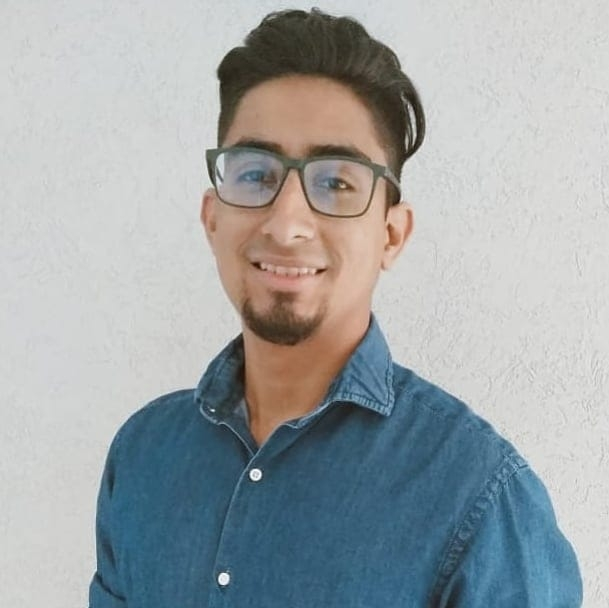

¡Hola! Mi nombre es Domingo I Pulgar D.
¡Hola! Mi nombre es Domingo I Pulgar D.
Y soy Desarrollador Web.
Hoy vengo a contarte parte de mi vida, espero sea de tu agrado.
Biografia
Nací en Venezuela Edo. Carabobo. El 2 de agosto de 1992. Lugar donde viví 28 años de mi vida, donde mi familia actualmente sigue viviendo. Actualmente me mude a Buenos Aires, hace 5 años llegue a este maravilloso pais, que me abrio las puertas y ha sido de mucha bendicion desde el momento que pise el Aeropuerto Internacional Ezeiza, he conocido gente increible, que se han convertido en mi familia y en grandes amigos. Me dedico al Diseño grafico, con tendencia al desarrollor web. Con aspiraciones de pronto dedicarme al area Front-End. Espero pronto estar preparado para poder cumplir uno de mis sueños que estar en el area de desarrollo y poder potenciar mi conocimiento y habilidades en el rubro.
Experencia Laboral.
- Auto Asist SRL.
- AccessSystem SRL.
- Cursos Online Iberoamerica.
- Musikoz.
- Centro Medico Doctor Bottini.
Familia:
Cónyuge:
- Milagros Sanchez (matr. 2017; actual).
Padres:
- Normarina Diaz.
- Domingo Pulgar.
Habilidades:
- Photoshop (nivel avanzado).
- Illustrator (nivel avanzado).
- Figma (nivel intermedio).
Idiomas:
- Ingles (nivel avanzado).
- Español (nativo).